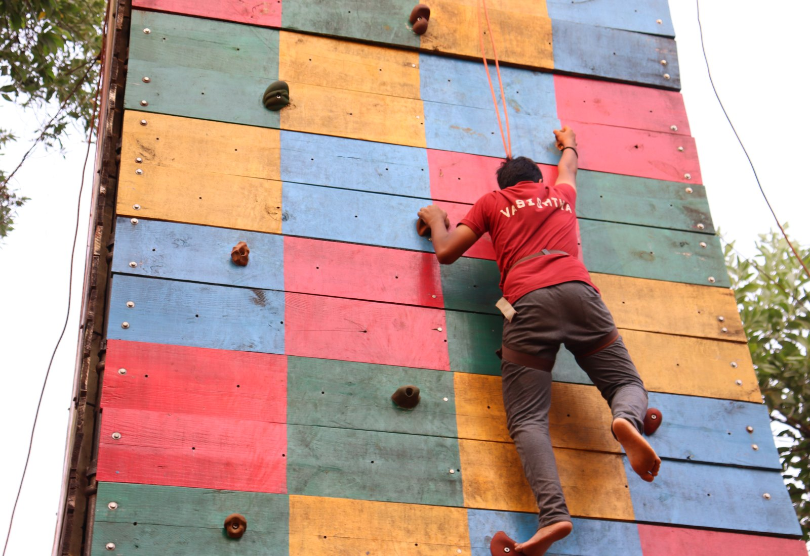
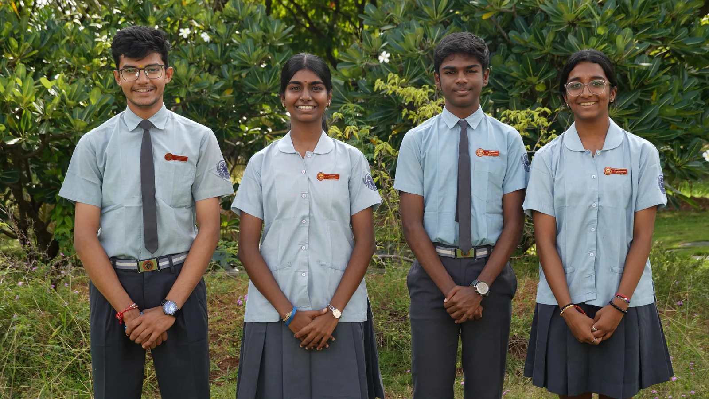

01 / 04
Vasishta
Red

The blazing untamed red of the fire runs through each member of this house. They strive for perfection with every heartbeat. Like fire they engulf fear, doubt, hatred and anger, pushing aside every obstacle in their way. They march forward with red in their veins and the spirit of remaining undaunted. Like the great Sage Vasishta they remain steadfast to their duties and possess wisdom that guides their fierce battles.
View Vasishta photographs
Student Council 2026–27
Vasishta House Captains
We proudly carry the fiery flag of the red house as Vasishta blazes forward with an unstoppable force fueled by an imperishable spirit and a persistent drive to conquer every obstacle. The sage Vasishta stands as the symbol of supreme spiritual wisdom and total mastery of the mind and senses. Pujya Gurudev’s teachings brighten our path through the darkness, just as our maroon red represents the beating heart of our passion, persistence, and courage. With Gurudev’s blessings, no challenge is too hard and no hurdle too high. We are a wildfire of determination, destined to rise, conquer, and leave our mark—for we are Vasishta, the eternal house of the flame.
- Adhyatma Ghranthik Agarwal
- Adhvika K
- S Rithesh
- Haasini Anandhan